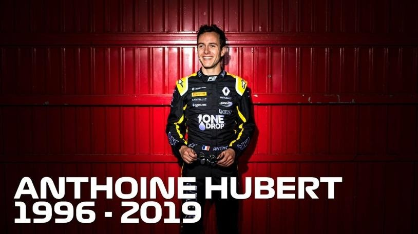

Jules Bianchi:
Beim Großen Preis von Japan 2014 verlor er im Regen die Kontrolle über sein Fahrzeug und rutschte mit hoher Geschwindigkeit unter den Kran, der gerade dabei war, Adrian Sutils Auto abzuschleppen. Er erlitt schwerste Kopfverletzungen und wurde sofort in das nächste Universitätskrankenhaus gebracht. Er konnte sich jedoch nie von diesen Verletzungen erholen. Er verstarb am 17. 07. 2015 nach neun Monaten im Koma.
Anthoine Hubert:
In der zweiten Runde des Hauptrennens der Formel 2 in Belgien verlor der Pilot Giuliano Alesi in der Eau Rouge die Kontrolle über seinen Wagen. Anschließend musste Hubert ihm ausweichen verlor selbst die Kontrolle, prallte in die Mauer und von dort aus zurück auf die Strecke, wo er von Juan Manuel Correa an der Seite getroffen wurde. Die Eau Rouge ist eine extrem schnelle Passage, wo Geschwindigkeiten von 270 km/h erreicht werden. Der Rauch der durchdrehenden Reifen machte die Sicht, und damit auch Ausweichmanöver unmöglich. Noch am frühen Abend erlag Hubert seinen Verletzungen. Dies wurde u.a. noch in der ARD-Sportschau gemeldet.
